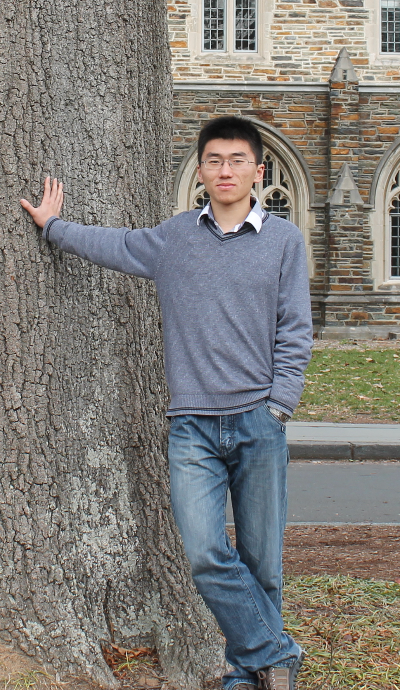

Jiaji Huang |
||
|
Bio Publication Blog |
 |
I am a research scientist at Baidu Silicon Valley AI Lab (SVAIL). Previously I worked with Prof. Robert Calderbank at Duke University. There I graduate with a PhD on Electrical and Computer Engineering. I also hold a B.S. degree from EEIS Department of University of Science and Technology of China. I work on signal processing and machine learning problems, from low-level sensing and reconstruction to high-level representation and perception. While interested in a wide range of applications, including imaging, speech, etc., I am also a lover of theory. Information theory and Statistical Learning theory are the two powerful tools that help me understand fundamentals. Check my CV for details.
Contact

|
| Last updated 10/06/2016 | ||